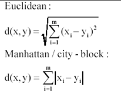
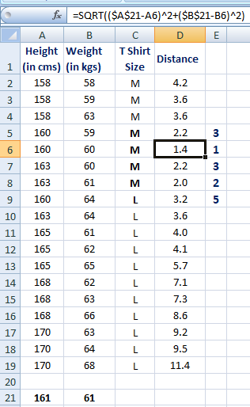
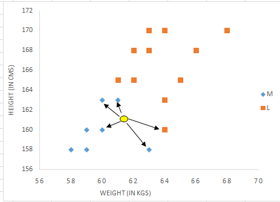
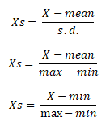
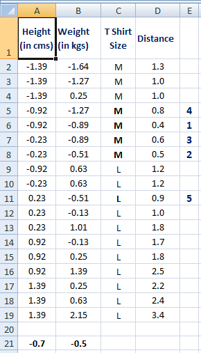

K Nearest Neighbor¶
Langkah-langkah Menjalankan K-Neighbor di R¶
K-Neighbor¶
K-Neighbor adalah teknik pembelajaran yang diawasi non-parametrik di mana kami mencoba untuk mengklasifikasikan titik data ke kategori tertentu dengan bantuan data training. Sederhananya, menangkap informasi dari semua kasus dan mengklasifikasikan kasus baru berdasarkan kesamaan.
Kelebihan dan Kekuarangan¶
KNN memiliki beberapa kelebihan yaitu tangguh terhadap training data yang noisy dan efektif apabila data latih nya besar.
Sedangkan kelemahan dari KNN adalah :
- KNN perlu menentukan nilai dari parameter K (jumlah dari tetangga terdekat)
- Pembelajaran berdasarkan jarak tidak jelas mengenai jenis jarak apa yang harus digunakan dan atribut mana yang harus digunakan untuk mendapatkan hasil yang terbaik
- Biaya komputasi cukup tinggi karena diperlukan perhitungan jarak dari tiap sample uji pada keseluruhan sample latih
Bagaimana K-Neighbor Bekerja?¶
Misalkan kita memiliki tinggi, berat dan ukuran kaos dari beberapa pelanggan dan kita perlu memprediksi ukuran kaos dari pelanggan baru hanya dengan informasi tinggi dan berat yang kita miliki. Data termasuk informasi tinggi, berat dan ukuran kaos ditampilkan di bawah ini.
| Height (in cms) | Weight (in kgs) | T Shirt Size |
|---|---|---|
| 158 | 58 | M |
| 158 | 59 | M |
| 158 | 63 | M |
| 160 | 59 | M |
| 160 | 60 | M |
| 163 | 60 | M |
| 163 | 61 | M |
| 160 | 64 | L |
| 163 | 64 | L |
| 165 | 61 | L |
| 165 | 62 | L |
| 165 | 65 | L |
| 168 | 62 | L |
| 168 | 63 | L |
| 168 | 66 | L |
| 170 | 63 | L |
| 170 | 64 | L |
| 170 | 68 | L |
#Langkah 1 : Hitung Kesamaan berdasarkan fungsi jarak.¶

Gagasan untuk menggunakan ukuran jarak adalah untuk menemukan jarak (kesamaan) antara sampel baru dan data training dan kemudian menemukan k-terdekat dengan pelanggan baru dalam hal tinggi dan berat.
Pelanggan baru bernama 'Monica' memiliki tinggi 161cm dan berat 61kg.¶
Demikian pula, kami akan menghitung jarak semua data training dengan data baru dan menghitung peringkat dalam hal jarak. Nilai jarak terkecil akan berada di peringkat 1 dan dianggap sebagai tetangga terdekat.
#Langkah 2: Menemukan tetangga terdekat¶
Biarkan k menjadi 5. Kemudian mencari algoritma 5 pelanggan yang paling dekat dengan Monica, yaitu paling mirip dengan Monica dalam hal atribut, dan lihat kategori apa yang digunakan oleh 5 pelanggan itu. Jika 4 dari mereka memiliki 'Ukuran kaos sedang' dan 1 memiliki 'Ukuran kaos Besar' maka tebakan terbaik untuk Monica adalah 'kaos Sedang. Lihat perhitungan yang ditunjukkan pada gambar di bawah ini.

Pada grafik di bawah ini, variabel dependen biner (ukuran kaos) ditampilkan dalam warna biru dan oranye. 'Ukuran kaos sedang' berwarna biru dan 'Ukuran kaos besar' dalam warna oranye. Informasi pelanggan baru ditampilkan dalam lingkaran kuning. Empat titik data yang disorot biru dan satu titik data yang disorot oranye dekat dengan lingkaran kuning. jadi prediksi untuk case baru adalah titik data yang disorot biru yang ukuran kaos Sedang.

Asumsi K-Neighbor¶
1. Standardisasi¶
Ketika variabel independen dalam data training diukur dalam unit yang berbeda, penting untuk melakukan standarisasi variabel sebelum menghitung jarak. Misalnya, jika satu variabel didasarkan pada tinggi dalam cm, dan yang lainnya didasarkan pada berat dalam kg maka tinggi akan lebih mempengaruhi perhitungan jarak. Agar dapat dibandingkan, kita perlu membuat standar yang dapat dilakukan dengan salah satu metode berikut:

Setelah standarisasi, nilai terdekat ke-5 berubah karena ketinggian mendominasi lebih awal sebelum standarisasi. Oleh karena itu, penting untuk membakukan prediktor sebelum menjalankan algoritma tetangga K-terdekat.

2.Outlier¶
Nilai-k rendah sensitif terhadap outlier dan nilai-K yang lebih tinggi lebih tahan terhadap outlier karena menganggap lebih banyak pemilih untuk memutuskan prediksi.
Mengapa KNN bersifat non-parametrik?¶
Non-parametrik berarti tidak membuat asumsi apa pun tentang distribusi data yang mendasarinya. Metode non-parametrik tidak memiliki jumlah parameter tetap dalam model. Demikian pula di KNN, parameter model sebenarnya tumbuh dengan dataset training.
KNN vs K-Mean¶
Banyak orang bingung antara dua teknik statistik ini - K-mean dan K-tetangga terdekat. Lihat beberapa perbedaan di bawah ini - K-mean adalah teknik belajar tanpa pengawasan (tidak ada variabel dependen) sedangkan KNN adalah algoritma pembelajaran yang diawasi (variabel dependen ada) K-mean adalah teknik pengelompokan yang mencoba untuk membagi titik data menjadi K-cluster sehingga titik-titik di setiap cluster cenderung saling berdekatan sedangkan K-tetangga terdekat mencoba untuk menentukan klasifikasi suatu titik, menggabungkan klasifikasi K poin terdekat
[^Bisakah KNN digunakan untuk regresi?]: [^Yes, K-nearest neighbor can be used for regression. In other words, K-nearest neighbor algorithm can be applied when dependent variable is continuous. In this case, the predicted value is the average of the values of its k nearest neighbors.]:
Pro dan Kontra KNN¶
Pro¶
Mudah dimengerti Tidak ada asumsi tentang data Dapat diterapkan untuk klasifikasi dan regresi Bekerja dengan mudah pada masalah multi-class
Kontra¶
Memori Intensif / Komputasi mahal Peka terhadap skala data Tidak berfungsi dengan baik pada variabel target acara jarang (miring) Perjuangan ketika tingginya jumlah variabel independen Untuk masalah apa pun, nilai k yang kecil akan menyebabkan variasi prediksi yang besar. Atau, pengaturan k ke nilai besar dapat menyebabkan bias model besar. Bagaimana cara menangani variabel kategori di KNN?
Buat variabel dummy dari variabel kategori dan sertakan mereka, bukan variabel kategori asli. Tidak seperti regresi, buat k boneka bukan (k-1). Misalnya, variabel kategori bernama "Departemen" memiliki 5 level / kategori unik. Jadi kita akan membuat 5 variabel dummy. Setiap variabel dummy memiliki 1 terhadap departemennya dan yang lainnya 0.
Bagaimana menemukan nilai K terbaik?¶
Validasi silang adalah cara cerdas untuk mengetahui nilai K optimal. Ini memperkirakan tingkat kesalahan validasi dengan memegang subset dari set pelatihan dari proses pembangunan model.
Validasi silang (misalkan validasi 10 kali lipat) melibatkan pembagian pelatihan secara acak menjadi 10 grup, atau lipatan, dengan ukuran yang kira-kira sama. 90% data digunakan untuk melatih model dan sisanya 10% untuk memvalidasinya. Tingkat kesalahan klasifikasi kemudian dihitung pada data validasi 10%. Prosedur ini berulang 10 kali. Kelompok pengamatan yang berbeda diperlakukan sebagai set validasi masing-masing dari 10 kali. Ini menghasilkan 10 perkiraan kesalahan validasi yang kemudian dirata-rata.
K Tetangga Terdekat di R¶
Kami akan menggunakan data historis statistik menang / kalah masa lalu dan pidato terkait. Dataset ini terdiri dari 1524 pengamatan pada 14 variabel. Variabel dependen adalah win / loss di mana 1 mengindikasikan win dan 0 mengindikasikan loss. Variabel independen adalah:
-
Proporsi kata-kata dalam pidato yang ditampilkan Sebuah. Optimisme b. Pesimisme c. penggunaan Masa Lalu d. penggunaan Present e. penggunaan Masa Depan
-
Jumlah waktu dia menyebutkan partainya sendiri
-
Jumlah waktu dia menyebutkan pihak lawannya.
-
Beberapa ukuran menunjukkan isi pidato yang ditampilkan Sebuah. Keterbukaan b. Hati nurani c. Extraversion d. Agreeableness e. Neurotisisme f. emosionalitas
Read Data¶
# Read data data1 = read.csv("US Presidential Data.csv") View(data1)
Membaca file CSV dengan bantuan perintah read.csv. Di sini argumen pertama adalah nama dataset. Argumen kedua - Header = TRUE atau T menyiratkan bahwa baris pertama dalam file csv menunjukkan judul sementara header = FALSE atau F menunjukkan bahwa data harus dibaca dari baris pertama dan tidak melibatkan judul apa pun.
# load library library(caret) library(e1071)
# Transforming the dependent variable to a factor data1Win.Loss = as.factor(data1Win.Loss)
Di sini kita akan menggunakan paket caret untuk menjalankan knn. Karena variabel dependen saya adalah numerik di sini, maka kita perlu mengubahnya menjadi faktor menggunakan as.factor ().
#Partitioning the data into training and validation data set.seed(101) index = createDataPartition(data1$Win.Loss, p = 0.7, list = F ) train = data1[index,] validation = data1[-index,]
Untuk mempartisi data ke dalam set pelatihan dan validasi, kami menggunakan fungsi createDataPartition() di caret.
Pertama-tama kita menetapkan benih menjadi 101 sehingga hasil yang sama dapat diperoleh. Dalam createDataPartition() argumen pertama adalah variabel dependen, p menunjukkan berapa banyak data yang kita inginkan dalam set pelatihan; di sini kita mengambil 70% dari data dalam set pelatihan dan sisanya dalam set validasi silang, daftar = F menunjukkan bahwa indeks yang kita peroleh harus dalam bentuk vektor.
# Explore data dim(train) dim(validation) names(train) head(train) head(validation)
Dimensi data-training dan validasi diperiksa melalui dim (). Lihat 6 baris dataset pelatihan pertama
Win.Loss Optimism Pessimism PastUsed FutureUsed PresentUsed OwnPartyCount
1 X1 0.10450450 0.05045045 0.4381443 0.4948454 0.06701031 2
3 X1 0.11257190 0.04930156 0.4159664 0.5168067 0.06722689 1
5 X1 0.10582640 0.05172414 0.3342618 0.5821727 0.08356546 3
7 X1 0.09838275 0.06401617 0.3240741 0.6018519 0.07407407 6
9 X1 0.10610734 0.04688464 0.3633540 0.5372671 0.09937888 2
10 X1 0.10066128 0.05951506 0.3554817 0.5382060 0.10631229 1
OppPartyCount NumericContent Extra Emoti Agree Consc Openn
1 2 0.001877543 4.041 4.049 3.469 2.450 2.548
3 1 0.002131163 3.463 4.039 3.284 2.159 2.465
5 4 0.002229220 4.658 4.023 3.283 2.415 2.836
7 4 0.002251985 3.727 4.108 3.357 2.128 2.231
9 5 0.002446440 4.119 4.396 3.661 2.572 2.599
10 2 0.002107436 3.800 4.501 3.624 2.117 2.154Secara default, level variabel dependen dalam dataset ini adalah "0" "1". Nanti ketika kita akan melakukan prediksi, level-level ini akan digunakan sebagai nama variabel untuk prediksi sehingga kita perlu membuatnya menjadi nama variabel yang valid.
# Setting levels for both training and validation data levels(trainWin.Loss) <- make.names(levels(factor(trainWin.Loss))) levels(validationWin.Loss) <- make.names(levels(factor(validationWin.Loss)))
Di sini kita menggunakan metode validasi silang berulang menggunakan trainControl. Angka menunjukkan jumlah lipatan dan 'pengulangan' untuk validasi silang lipat 'berulang'. Dalam hal ini, 3 validasi 10 kali lipat terpisah digunakan.
# Setting up train controls repeats = 3 numbers = 10 tunel = 10
set.seed(1234) x = trainControl(method = "repeatedcv", number = numbers, repeats = repeats, classProbs = TRUE, summaryFunction = twoClassSummary)
Menggunakan fungsi train() kita menjalankan knn kita; Win.Loss adalah variabel dependen, berhenti penuh setelah tilde menunjukkan semua variabel independen ada di sana. Dalam ‘data =’ kami melewati perangkat pelatihan kami, ‘metode = den menunjukkan teknik mana yang ingin kami gunakan, pengaturan preProcess ke pusat dan skala memberi tahu kami bahwa kami menstandarisasi variabel independen kami
Center: kurangi mean dari nilai. Scale: membagi nilai dengan standar deviasi.
trControl menuntut ‘x’ kami yang diperoleh melalui train () dan tunelength selalu berupa integer yang digunakan untuk menyempurnakan algoritme kami.
model1 <- train(Win.Loss~. , data = train, method = "knn",
preProcess = c("center","scale"),
trControl = x,
metric = "ROC",
tuneLength = tunel)
# Summary of model
model1
plot(model1)
k-Nearest Neighbors
1068 samples
13 predictor
2 classes: 'X0', 'X1'
Pre-processing: centered (13), scaled (13)
Resampling: Cross-Validated (10 fold, repeated 3 times)
Summary of sample sizes: 961, 962, 961, 962, 961, 962, ...
Resampling results across tuning parameters:
k ROC Sens Spec
5 0.8440407 0.6910182 0.8382051
7 0.8537506 0.6847658 0.8520513
9 0.8575183 0.6712350 0.8525796
11 0.8588422 0.6545296 0.8592152
13 0.8585478 0.6560976 0.8556333
15 0.8570397 0.6432249 0.8648329
17 0.8547545 0.6448509 0.8627894
19 0.8520574 0.6336043 0.8632867
21 0.8484632 0.6215447 0.8627894
23 0.8453320 0.6071622 0.8658664
ROC was used to select the optimal model using the largest value.
The final value used for the model was k = 11.
Tahap akhir, untuk membuat prediksi pada set validasi kami, kita menggunakan fungsi prediksi dimana argumen pertama adalah rumus yang akan diterapkan dan argumen kedua adalah data baru yang kami inginkan prediksi.
Validation¶
valid_pred <- predict(model1,validation, type = "prob")
Storing Model Performance Scores¶
library(ROCR) pred_val <-prediction(valid_pred[,2],validation$Win.Loss)
Calculating Area under Curve (AUC)¶
perf_val <- performance(pred_val,"auc") perf_val
Plot AUC¶
perf_val <- performance(pred_val, "tpr", "fpr") plot(perf_val, col = "green", lwd = 1.5)
Calculating KS statistics¶
ks <- max(attr(perf_val, "y.values")[[1]] - (attr(perf_val, "x.values")[[1]])) ks
Area di bawah kurva (AUC) pada dataset validasi adalah 0,8642.
Referensi : https://www.listendata.com/2017/12/k-nearest-neighbor-step-by-step-tutorial.html